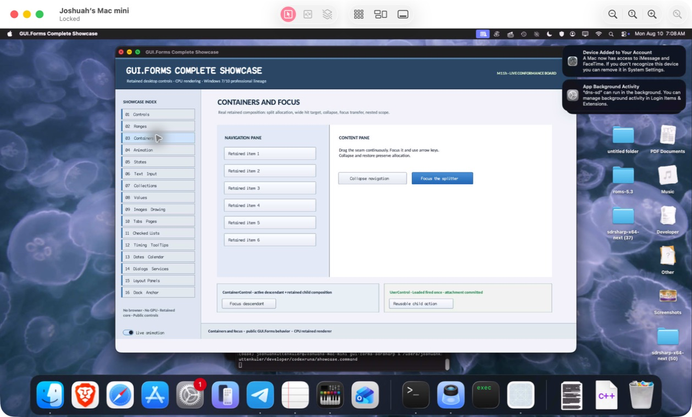

class · visual
InputTransparentControl
InputTransparentControl participates in retained layout/paint ordering while deliberately declining hit testing for compatibility placeholder surfaces.
OBSERVED: bundle 013 per-adapter source isolation; native and MinGW ABI builds passisolated per type
Visual evidence

Ownership and hierarchy
- Hierarchy
- Control → InputTransparentControl
- Declaration
- src/abi/control_adapters/input_transparent_control/input_transparent_control.hpp:11
- Definition
- src/abi/control_adapters/input_transparent_control/input_transparent_control.cpp
Declared methods
~InputTransparentControl public
~InputTransparentControl() overrideReleases the compatibility placeholder through its isolated translation-unit boundary.
InputTransparentControl public
explicit InputTransparentControl(StableId stable_id) : Control(std::move(stable_id))Forwards stable identity to the retained Control base.
hit_test_local public
[[nodiscard]] bool hit_test_local(gui_forms::Point) const overrideAlways returns false so the placeholder cannot intercept input.